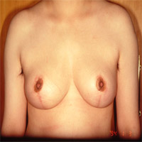
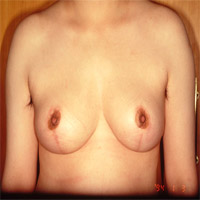

擁有豐滿的傲人胸部是許多女性的夢想，然而太大的胸部卻是一種夢魘，以往乳房縮減手術多是西方女性在進行，尤其現代人飲食的改變逐漸西化，胸部豐滿的東方女性越來越多，過大的胸脯雖然吸引他人目光，卻也為自己帶來不少困擾，容易造成胸部下垂及頸、肩、骨骼的負擔，進而形成腰酸背痛、駝背、肩頸酸痛、運動受限等現象，在炎熱的夏天更容易產生乳溝濕疹的現象；除了生理的不適之外，亦造成社交退縮、自信心不足、自卑等心理層面的負面影響。
乳房縮減手術無疑是有這些困擾女性的最大救星，主要作用是去除胸部過多的脂肪及部份乳腺，並將取出組織後的鬆垮皮膚切除，在手術過程中，一方面將過大的乳房縮小，一方面將縮減後的乳房重新整形，除此之外，還可以同時修整過大的乳暈、提高原來下垂的乳頭，重新固定乳頭的位置並予以定型，塑造出符合身體比例的乳房。
雖然乳房縮減術是切除部份的乳房組織來達到縮減胸部的目的，但是就乳腺的切除而言，有其固定的切除量，因此並不影響到日後餵哺母乳的功能，無須擔心；且其留下的疤痕是隱藏在乳暈及乳房下，所以難以察覺、不影響外觀。至於過大乳暈的修整及乳頭移位亦不影響乳頭的敏感度。但是除了因為乳房過大嚴重影響到生理之外，醫生皆建議最好待乳房發育完全、或確定不再生育後再進行乳房削減手術，效果較佳。
手術過程中，通常是採用全身麻醉的方式進行，手術時間約需4個小時，雖說任何一種醫療行為皆有風險存在，但是尋找合格且專業的整形外科醫師及麻醉師，必能將風險減至最低。
乳房縮減手術畢竟仍是個改變外觀的手術，加上每個人的認知不同，因此在與醫師諮詢時，一定要溝通得詳細且清楚，諸如大小縮減到什麼程度？乳房會改變成什麼樣的外型？越是清楚就越能避免不必要的糾紛。
 

治療前
治療後

治療前
治療後

治療前
治療後